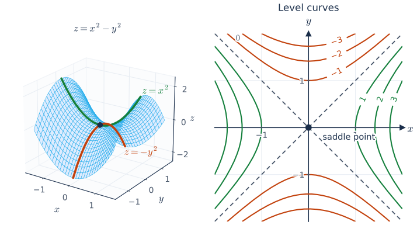
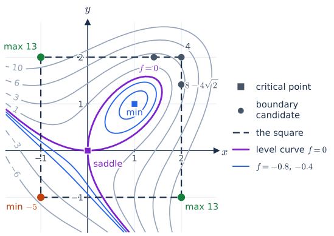
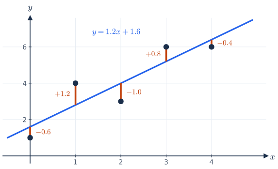

Find the highest and lowest points of a function of two or more variables. You will classify critical points with the Hessian, find absolute extreme values on closed bounded regions, optimise under constraints with Lagrange multipliers, fit a line to data by least squares, and see why gradient descent can zigzag when a function curves much more steeply in one direction than in another.
⏱ 270 minYou need: Module 8 (optimisation in one variable) and Modules 16 and 17 (vectors, partial derivatives and the gradient); the quadratic approximation uses Taylor polynomials from Module 15, and one optional proof uses Taylor’s theorem from the same module
In this module you will
Find the critical points of a function of two variables and classify them with the second derivative test
Find the absolute maximum and minimum values of a continuous function on a closed bounded region
Solve optimisation problems with constraints by Lagrange multipliers, and explain the method with level curves
Fit a line to data by least squares, deriving the normal equations from partial derivatives
Explain how the step size and the shape of the level curves decide whether, and how fast, gradient descent converges
1
Local extrema and critical points
Picture a function of two variables as a landscape: above the point (x,y) of a map the ground is at height z=f(x,y), and the level curves f(x,y)=c are the contour lines of the map (Module 17). Three kinds of place have level ground underfoot: the top of a hill, the bottom of a hollow, and a mountain pass, the lowest point of a ridge and the highest point of the path across it. This module finds such places and tells them apart. Then it finds the extreme values of a function on a region, optimises under constraints, fits lines to data, and studies how gradient descent, a method used to train machine-learning models, searches for the bottom of a valley. Unless a passage says otherwise, f is a function of two variables; most of the ideas extend to more.
Definition 18.1Local and absolute extrema
Let f be a function of two variables with domain D, and let (a,b) be a point of D.
f(a,b) is the absolute maximum value of f if f(a,b)≥f(x,y) for every point (x,y) of D, and the absolute minimum value if f(a,b)≤f(x,y) for every (x,y) in D.
f(a,b) is a local maximum value of f if f(a,b)≥f(x,y) for every (x,y) in some open disc centred at (a,b) that lies in D, and a local minimum value if f(a,b)≤f(x,y) for every (x,y) in such a disc.
The open disc of radius r>0 centred at (a,b) is the set of points (x,y) with (x−a)2+(y−b)2<r2: the points whose distance from (a,b) is less than r.
These are the extreme values, or extrema. “Local” means “compared with every nearby point, in every direction”, so a point on the edge of the domain is never a local extremum, as in Module 8.
Theorem 18.1Fermat’s theorem in two variables
If f has a local maximum or a local minimum at (a,b), and the first partial derivatives of f exist at (a,b), then
fx(a,b)=0andfy(a,b)=0,
that is, ∇f(a,b)=0.
Proof
Suppose that f(a,b) is a local maximum value: f(x,y)≤f(a,b) on an open disc of radius r centred at (a,b) that lies in the domain. Walk along the horizontal line through (a,b): the function g(x)=f(x,b) is defined for ∣x−a∣<r, since those points (x,b) lie in the disc, and g(x)≤g(a) there. So g has a local maximum at a. Its derivative there is g′(a)=fx(a,b), which exists, because a partial derivative is the ordinary derivative along such a line (Module 17). By Fermat’s theorem in one variable (Theorem 8.1), g′(a)=0, that is, fx(a,b)=0. The vertical line through (a,b), with h(y)=f(a,y), gives fy(a,b)=0 in the same way. Finally, a local minimum of f is a local maximum of −f.
∎
Geometrically: where a local extremum has a tangent plane z=f(a,b)+fx(a,b)(x−a)+fy(a,b)(y−b) (Module 17), the plane is horizontal, z=f(a,b).
Definition 18.2Critical point
A critical point of f is a point (a,b) of its domain where ∇f(a,b)=0, that is, fx(a,b)=fy(a,b)=0, or where fx or fy does not exist.
In these words, Theorem 18.1 says: every local extremum is at a critical point. As in one variable, the converse fails. The simplest example is f(x,y)=x2−y2. Its gradient ∇f=⟨2x,−2y⟩ is 0 only at the origin, where f(0,0)=0. Walk through the origin along the two axes:
t
f(t,0)=t2
f(0,t)=−t2
−1
1
−1
−0.5
0.25
−0.25
−0.1
0.01
−0.01
0
0
0
0.1
0.01
−0.01
0.5
0.25
−0.25
1
1
−1
Along the x-axis the origin is the lowest point; along the y-axis it is the highest. So every disc around the origin contains points where f>0 and points where f<0, and f(0,0)=0 is neither a local maximum nor a local minimum. The surface is shaped like a saddle, or a mountain pass (Figure 18.1).

Figure 18.1
Left: the surface z=x2−y2. Along the x-axis it follows the parabola z=x2 (green), lowest at the origin; along the y-axis it follows z=−y2 (orange), highest at the origin. Right: its level curves x2−y2=c are hyperbolas, green for c=1,2,3 and orange for c=−1,−2,−3; the level curve c=0 is the pair of dashed lines y=±x, which cross at the saddle point.
Definition 18.3Saddle point
A critical point (a,b) in the interior of the domain of f (so some open disc centred there lies in the domain) is a saddle point if f has neither a local maximum nor a local minimum there: every open disc centred at (a,b) contains domain points where f(x,y)>f(a,b) and points where f(x,y)<f(a,b).
Common contour pictures are small closed loops around a hilltop or a hollow, and a level curve crossing itself at a saddle point, like the lines y=±x in Figure 18.1. These pictures are guides, not definitions: a saddle’s level curve need not cross itself, as x2+y3=0 in Example 18.3 will show.
Example 18.1Critical points of a cubic✓ Checked
Find the critical points of f(x,y)=x3+y3−3xy.
f is a polynomial, so its partial derivatives exist everywhere, and the critical points are the solutions of ∇f=0:
fx=3x2−3y=0,fy=3y2−3x=0.
The first equation says y=x2, the second x=y2. Substitute the first into the second: x=(x2)2=x4, that is,
x4−x=x(x3−1)=x(x−1)(x2+x+1)=0.
The quadratic factor has no real zeros, since its discriminant is 1−4=−3<0. So x=0 or x=1, and y=x2 gives the two critical points (0,0) and (1,1). Check the second: fx(1,1)=3−3=0 and fy(1,1)=3−3=0.
Watch out
Three slips with critical points. Calling every critical point an extremum: the origin is a critical point of x2−y2 but a saddle point. Forgetting the points where a partial derivative does not exist: the cone f(x,y)=x2+y2 has its absolute minimum 0 at the origin, where fx does not exist, since (f(h,0)−f(0,0))/h=∣h∣/h is 1 for h>0 and −1 for h<0.Losing solutions by dividing: dividing x=x4 by x gives x3=1 and loses x=0, the critical point (0,0). Factor instead.
2
The second derivative test
Module 8 told a peak from a valley by the sign of f′′(c). In two variables the test uses all three second partial derivatives, and the reason is a quadratic approximation.
The quadratic approximation. Let f have continuous second partial derivatives near (a,b), and look at f along the line from (a,b) towards (a+h,b+k):g(t)=f(a+th,b+tk). By the chain rule of Module 17, g′(t)=fxh+fyk, and differentiating again, with Clairaut’s theorem fyx=fxy,
g′′(t)=fxxh2+2fxyhk+fyyk2,
where the partial derivatives are taken at (a+th,b+tk). The Taylor polynomial of degree 2 of g at 0 (Module 15), evaluated at t=1, gives
with every partial derivative now taken at (a,b). The first three terms are the linear approximation of Module 17. At a critical point fx=fy=0, so near (a,b)
f(a+h,b+k)−f(a,b)≈21Q(h,k),Q(h,k)=Ah2+2Bhk+Ck2,
where A=fxx(a,b),B=fxy(a,b) and C=fyy(a,b). Near a critical point the graph looks like the graph of the quadratic Q, so the question becomes: when is Q(h,k) positive, when negative, and when both?
The sign of a quadratic. If A=0, complete the square:
Ah2+2Bhk+Ck2=A(h+ABk)2+AAC−B2k2.
If AC−B2>0, both terms have the sign of A, and both are 0 only when k=0 and then h=0. So Q(h,k) has the sign of A for every (h,k)=(0,0): a bowl if A>0, a dome if A<0.
If AC−B2<0, then Q(1,0)=A, while along the line h=−ABk the first term vanishes and Q has the opposite sign: Q takes both signs, as on a saddle. (If A=0 and B=0,Q=k(2Bh+Ck) takes both signs too.)
If AC−B2=0,Q is 0 along a whole line through the origin, and the quadratic cannot decide.
The three models are h2+k2 (a bowl), −h2−k2 (a dome) and h2−k2 (the saddle of Figure 18.1). The quadratic 2hk, with A=C=0 and B=1, is the same saddle turned through 45∘: with h=(u−v)/2 and k=(u+v)/2, it becomes u2−v2.
Definition 18.4The Hessian and its determinant
The Hessian matrix of f at (a,b) is the square array of its second partial derivatives there,
H=(fxxfyxfxyfyy),
and, when fyx=fxy, its determinant is the number
D=fxxfyy−fxy2.
(A rectangular array of numbers is a matrix; the determinant of a two-by-two matrix (prqs) is ps−qr.)
D is the AC−B2 of the completed square. Mathematical Foundations studies matrices in its linear algebra modules, and in its Module 13 the quadratic forms behind this test in any number of variables.
Theorem 18.2The second derivative test
Suppose that the second partial derivatives of f are continuous on an open disc centred at (a,b), and that fx(a,b)=0 and fy(a,b)=0. Let D=fxx(a,b)fyy(a,b)−fxy(a,b)2.
If D>0 and fxx(a,b)>0, then f(a,b) is a local minimum value.
If D>0 and fxx(a,b)<0, then f(a,b) is a local maximum value.
If D<0, then (a,b) is a saddle point.
If D=0, the test is inconclusive.
When D>0,fxxfyy>fxy2≥0, so fxx and fyy have the same sign, and either one decides. The continuity of the second partial derivatives is what makes the quadratic Q describe f near (a,b); the proof below shows where it is used.
Going deeperWhy the second derivative test works
A first reading may skip this proof. Take (h,k)=(0,0) so small that the segment from (a,b) to (a+h,b+k) lies in the disc, and let g(t)=f(a+th,b+tk) for 0≤t≤1, as above. Since the second partial derivatives are continuous, fx and fy are differentiable, so the chain rule applies twice, and g′′(t)=fxxh2+2fxyhk+fyyk2, with the partial derivatives at (a+th,b+tk). Taylor’s theorem with n=1 (Module 15) gives g(1)=g(0)+g′(0)+21g′′(c) for some c between 0 and 1. Since g′(0)=fx(a,b)h+fy(a,b)k=0,
Minimum. Suppose D>0 and fxx>0 at (a,b). The functions fxx and fxxfyy−fxy2 are continuous and positive at (a,b), so they stay positive on some smaller disc centred at (a,b). If (a+h,b+k) lies in that disc, so does (a+ch,b+ck), and at that point the completed square shows that the bracket in (∗) is positive. So f(a+h,b+k)>f(a,b) for every such (h,k)=(0,0): a local minimum. Maximum. Apply this to −f.
Saddle. Suppose D<0 at (a,b). The completed square gives directions (h1,k1) and (h2,k2) with Q(h1,k1)>0 and Q(h2,k2)<0 for the second partial derivatives at (a,b). Put (h,k)=(sh1,sk1) in (∗): then f(a+sh1,b+sk1)−f(a,b)=21s2(fxxh12+2fxyh1k1+fyyk12) at a point between (a,b) and (a+sh1,b+sk1). As s→0 that point tends to (a,b), and by continuity the bracket tends to Q(h1,k1)>0; so f>f(a,b) at points (a+sh1,b+sk1) with small s=0. In the same way f<f(a,b) at points (a+sh2,b+sk2) with small s=0. Every disc centred at (a,b) contains both kinds of point: a saddle point. Inconclusive. Example 18.3 shows three functions with D=0: a minimum, and two saddle points.
Example 18.2Classifying the critical points of the cubic✓ Checked
Classify the critical points (0,0) and (1,1) of f(x,y)=x3+y3−3xy (Example 18.1), and decide whether f has absolute extreme values.
The second partial derivatives are fxx=6x,fxy=−3 and fyy=6y, all continuous, so
D=(6x)(6y)−(−3)2=36xy−9.
At (0,0):D=−9<0, a saddle point. You can see it directly: along the line y=x,f(t,t)=2t3−3t2=t2(2t−3)<0 for t=0 near 0, while along y=−x,f(t,−t)=3t2>0.
At (1,1):D=36−9=27>0 and fxx=6>0, so f(1,1)=1+1−3=−1 is a local minimum value.
The local minimum is not absolute: along the x-axisf(x,0)=x3, which tends to −∞ as x→−∞ and to ∞ as x→∞. So f has no absolute minimum and no absolute maximum. Figure 18.2 shows the level curves: small closed loops around (1,1), and the level curve f=0 crossing itself at the saddle point.

Figure 18.2
Level curves of f(x,y)=x3+y3−3xy. Around the local minimum at (1,1) the level curves f=−0.8 and f=−0.4 (blue) are closed loops; through the saddle point at the origin passes the level curve f=0 (purple), which crosses itself there. The dashed square and the dots belong to Example 18.4: they mark the candidates for the absolute extreme values of f on the square.
Example 18.3When D=0✓ Checked
Show that f1=x2+y4,f2=x2−y4 and f3=x2+y3 each have exactly one critical point, the origin, with D=0 there, and decide what each has at the origin.
The gradients are ⟨2x,4y3⟩,⟨2x,−4y3⟩ and ⟨2x,3y2⟩, which are 0 only at (0,0). At the origin all three have fxx=2,fxy=0 and fyy=0 (it is 12y2,−12y2 and 6y), so D=2⋅0−02=0: the test is inconclusive, and you must look at f itself.
f1(x,y)=x2+y4≥0=f1(0,0): an absolute minimum.
f2(x,0)=x2>0 for x=0, but f2(0,y)=−y4<0 for y=0: a saddle point.
f3(0,y)=y3 is positive for y>0 and negative for y<0: a saddle point, although fxx>0 and no direction makes Q=2h2 negative. Its zero level curve x2=−y3 has a cusp at the origin, not a crossing.
Watch out
Three slips with the test. Reading fxx when D<0: then the point is a saddle point, whatever the sign of fxx.Checking only fxx and fyy: f(x,y)=x2+3xy+y2 has fxx=fyy=2>0 at its critical point (0,0), but D=4−9=−5<0, and indeed f(t,−t)=−t2<0: the mixed term 3xy wins along the line y=−x.Treating D=0 as a saddle point: it means only that the test is inconclusive (Example 18.3).
Compute itClassifying critical points with SymPy
sp.hessian builds the Hessian matrix, and solve with a list of equations solves the system ∇f=0. Declare the symbols real, so that only real solutions come back:
Python
import sympy as sp
x, y = sp.symbols('x y', real=True)
f = x**3 + y**3 - 3*x*y
crit = sp.solve([sp.diff(f, x), sp.diff(f, y)], [x, y], dict=True)
H = sp.hessian(f, (x, y))
print(crit)
print(H, ' D =', H.det())
defclassify(D, fxx):
if D > 0:
return'local minimum'if fxx > 0else'local maximum'if D < 0:
return'saddle point'return'inconclusive'for p in crit:
D, fxx = H.det().subs(p), H[0, 0].subs(p)
print(p, ' D =', D, ' f_xx =', fxx, ':', classify(D, fxx), ' f =', f.subs(p))
Output
{x: 0, y: 0} D = -9 f_xx = 0 : saddle point f = 0
{x: 1, y: 1} D = 27 f_xx = 6 : local minimum f = -1
Without real=True, solve also returns the points where x is one of the two complex cube roots of 1 (the zeros of x2+x+1), which have no place on a map of the plane:
Python
u, v = sp.symbols('u v') # no assumptions
g = u**3 + v**3 - 3*u*v
print(len(sp.solve([sp.diff(g, u), sp.diff(g, v)], [u, v], dict=True)), 'solutions')
Output
4 solutions
3
Absolute extrema on closed bounded regions
Module 8 found the absolute extreme values of a continuous function on a closed interval [a,b] by comparing its values at the critical numbers and at the two endpoints. In two variables the interval becomes a region, and we must check its whole boundary, usually made of curves.
Definition 18.5Interior, boundary, closed and bounded
Let R be a set of points of the plane. A point P is an interior point of R if some open disc centred at P lies in R, and a boundary point of R if every open disc centred at P contains points of R and points not in R. The set R is closed if it contains all its boundary points, and bounded if it lies inside some disc.
The disc x2+y2≤1 is closed and bounded; its boundary is the circle x2+y2=1. The open disc x2+y2<1 is bounded but not closed, since it leaves out the whole circle. A rectangle with its sides, the set of points with a≤x≤b and c≤y≤d, is closed and bounded, and so is a triangle with its sides. The half-plane y≥0 is closed but not bounded.
Theorem 18.3The Extreme Value Theorem in two variables
If f is continuous on a nonempty, closed, bounded set R in the plane, then f has an absolute maximum value f(x1,y1) and an absolute minimum value f(x2,y2) on R, at some points (x1,y1) and (x2,y2) of R.
As for the one-variable theorem of Module 3, the proof belongs to real analysis, and this series uses the theorem without proof; it holds in three or more variables too. Each hypothesis is needed. On the open disc x2+y2<1,f(x,y)=x+y has no maximum: its values come as close to 2 as you like near (21,21), a point of the missing circle, but never reach it. On the half-plane y≥0 the same f is not bounded. And on the closed disc, the function equal to x+y except at (21,21), where it is 0, is not continuous and has no maximum.
Theorem 18.4Where the absolute extreme values are
Let f be continuous on a nonempty, closed, bounded set R. Then f has an absolute maximum value and an absolute minimum value on R, and each of them is taken at a boundary point of R or at a critical point of f that is an interior point of R.
Proof
By Theorem 18.3, the absolute maximum value on R is f(P) for some point P of R. If P is a boundary point, there is nothing to prove. Otherwise P is an interior point: some open disc centred at P lies in R, and f(P)≥f on that disc, so f(P) is a local maximum value. If both partial derivatives exist at P, they are 0 by Theorem 18.1; if not, P is a critical point by definition. The minimum is the same.
∎
Key idea
The closed region method. To find the absolute extreme values of a continuous function f on a nonempty, closed, bounded region R:
Find the critical points of f inside R, and the values of f there.
Find the largest and the smallest values of f on the boundary of R. Usually the boundary consists of pieces (the sides of a polygon, arcs of curves) on each of which f becomes a function of one variable: substitute the equation of a side, such as y=2, or a parametrisation, such as (cost,sint) on a circle, and use the closed interval method of Module 8, with the ends of each piece.
The largest of all these values is the absolute maximum value; the smallest is the absolute minimum value.
As in one variable, no test of the critical points is needed: you compare a list of numbers.
Example 18.4The extreme values on a square✓ Checked
Find the absolute maximum and minimum values of f(x,y)=x3+y3−3xy on the square R of points with −1≤x≤2 and −1≤y≤2.
f is a polynomial, so continuous, and the square is closed and bounded: the extreme values exist (Theorem 18.3).
Step 1: inside. The critical points are (0,0) and (1,1) (Example 18.1), both inside the square, with f(0,0)=0 and f(1,1)=−1. The saddle point is a candidate like any other: the method compares values, it does not classify.
Step 2: the boundary. The square has four sides. Since f(x,y)=f(y,x), the bottom side y=−1 behaves like the left side x=−1, and the top side y=2 like the right side x=2, with x and y swapped.
Left side, x=−1 and −1≤y≤2:f(−1,y)=y3+3y−1. Its derivative 3y2+3 is positive, so it is increasing, and its extreme values are at the ends: f(−1,−1)=−5 and f(−1,2)=13.
Right side, x=2 and −1≤y≤2:f(2,y)=y3−6y+8. Its derivative 3y2−6 is 0 at y=±2, and only 2 lies in [−1,2]. The values are f(2,2)=22−62+8=8−42≈2.343 and, at the ends, f(2,−1)=−1+6+8=13 and f(2,2)=8−12+8=4.
Bottom and top sides, by the symmetry: −5 at (−1,−1) and 13 at (2,−1);8−42 at (2,2),13 at (−1,2) and 4 at (2,2).
Step 3: compare.
Point
Where it comes from
f
(0,0)
critical point, saddle
0
(1,1)
critical point, local minimum
−1
(2,2),(2,2)
critical points of f on a side
8−42≈2.343
(−1,−1)
corner
−5
(2,−1),(−1,2)
corners
13
(2,2)
corner
4
The absolute maximum value is 13, at (2,−1) and at (−1,2); the absolute minimum value is −5, at the corner (−1,−1). All three are corners, and the local minimum at (1,1) is not the absolute minimum on the square (Figure 18.2).
Watch out
Three slips. Forgetting the ends of the boundary pieces: in Example 18.4 both extreme values are at corners, which no derivative finds. Classifying instead of comparing: the local minimum −1 is not the smallest value on the square, and a saddle point can be a candidate too. Keeping points outside the region: y=−2 solves 3y2−6=0, but (2,−2) is not on the square.
4
Lagrange multipliers
Many problems ask for the best point of a curve or a surface: the largest rectangle that fits in an ellipse, the point of a curve closest to a given point, the box with the most volume for a given amount of cardboard. Their variables are tied by an equation g(x,y)=c, a constraint. Section 18.3 parametrised the boundary; that works when a parametrisation is easy to find. The method of this section works with the equation itself, and its picture explains every answer.
Take the largest rectangle, with sides parallel to the axes, inside the ellipse 4x2+y2=1. We can centre it at the origin: moving any such rectangle there decreases or preserves the largest absolute x-coordinate and the largest absolute y-coordinate of its corners, so it still fits and has the same area. Then enlarge it until its corners reach the ellipse. Thus we can take the corners to be (±x,±y) with (x,y) on the ellipse, x≥0 and y≥0, and its area is A=(2x)(2y)=4xy. Numbers first. The points (2cost,sint) lie on the ellipse, since 44cos2t+sin2t=1, and 0≤t≤2π gives the quarter in the first quadrant:
t
x=2cost
y=sint
A=4xy
0
2
0
0
12π
1.932
0.2588
2
6π
1.732
0.5
3.464
4π
1.414
0.7071
4
3π
1
0.8660
3.464
125π
0.5176
0.9659
2
2π
0
1
0
The largest area in the table is 4, at t=4π, the point (2,22)≈(1.414,0.7071). In fact A=8costsint=4sin2t, whose largest value is 4.
Now the picture (Figure 18.3). For k>0, the level curves of the area, 4xy=k, are hyperbolas. When 0<k<4 the level curve crosses the quarter of the ellipse twice: two rectangles in the ellipse have that area. As k grows towards 4, the two crossing points move together, and at k=4 they merge: the level curve touches the ellipse. For k>4 it misses the ellipse altogether. Where the two curves touch they have the same tangent line, so the vectors perpendicular to them are parallel. The gradient of a differentiable function is perpendicular to its level curves where it is nonzero (Module 17), and the ellipse is the level curve g=1 of g(x,y)=4x2+y2. Both gradients are nonzero at the best point, so ∇A is parallel to ∇g:∇A=λ∇g for some number λ, read “lambda”.
Figure 18.3
The ellipse 4x2+y2=1 (green) and the level curves A=2,4 and 6 of the area A=4xy. The level curve A=4 (orange) touches the ellipse at (2,22), a corner of the largest rectangle (shaded); there ∇A and ∇g point the same way, and ∇A is 4 times as long (both arrows are drawn at a quarter of their length). Where A=2 crosses the ellipse, at (2cos75∘,sin75∘), the gradients are not parallel, and moving along the ellipse towards the touching point increases A.A=6 misses the ellipse.
Theorem 18.5Lagrange multipliers
Let f and g have continuous first partial derivatives near a point (a,b) of the curve g(x,y)=c, and suppose that ∇g(a,b)=0. If f, restricted to the curve, has a local maximum or a local minimum at (a,b) (that is, f(a,b)≥f(x,y), or f(a,b)≤f(x,y), for every point (x,y) of the curve in some disc centred at (a,b)), then there is a number λ with
∇f(a,b)=λ∇g(a,b).
Proof
Since ∇g(a,b)=0,gx(a,b) or gy(a,b) is not 0; say gy(a,b)=0 (otherwise exchange the roles of x and y). By the implicit function theorem of Module 17, applied to g(x,y)−c, near (a,b) the points of the curve form the graph of a differentiable function y=φ(x) with φ(a)=b. So for small t the curve is traced by r(t)=⟨a+t,φ(a+t)⟩, with r(0)=⟨a,b⟩ and r′(0)=⟨1,φ′(a)⟩.
The function k(t)=f(r(t)) has a local extremum at t=0, so k′(0)=0 by Fermat’s theorem (Theorem 8.1), and by the chain rule (Module 17) k′(0)=∇f(a,b)⋅r′(0). Also g(r(t))=c for every t, and differentiating gives ∇g(a,b)⋅r′(0)=0. So both gradients are perpendicular to r′(0)=⟨1,φ′(a)⟩. A vector ⟨u,v⟩ perpendicular to it has u+φ′(a)v=0, so it is v⟨−φ′(a),1⟩: both gradients are multiples of ⟨−φ′(a),1⟩, namely ∇f(a,b)=fy(a,b)⟨−φ′(a),1⟩ and ∇g(a,b)=gy(a,b)⟨−φ′(a),1⟩. Since gy(a,b)=0,∇f(a,b)=λ∇g(a,b) with λ=fy(a,b)/gy(a,b).
∎
The number λ is a Lagrange multiplier. The same holds in three variables, with f and g again having continuous first partial derivatives near the point: if f(x,y,z), restricted to the surface g(x,y,z)=c, has a local extremum at a point where ∇g=0, then ∇f=λ∇g there. The proof is the same, with the three-variable implicit function theorem, applied to every curve in the surface through the point: ∇f is perpendicular to all their tangent vectors, which fill the plane perpendicular to ∇g, so ∇f is a multiple of ∇g. The multiple can be 0: the theorem allows ∇f=0.
Key idea
The method of Lagrange multipliers. Suppose f and g have continuous first partial derivatives near the constraint curve. To find the extreme values of f(x,y) subject to g(x,y)=c:
Solve the equations fx=λgx,fy=λgy and g(x,y)=c for x,y and λ.
Add the points of the curve where ∇g=0, and the ends of the curve if it has ends.
Evaluate f at all these points. If the curve is nonempty, closed and bounded, like a circle or an ellipse, the largest value is the maximum and the smallest the minimum (Theorem 18.3). Otherwise an extra argument must show that an extremum exists.
In three variables, solve ∇f=λ∇g and g(x,y,z)=c: four equations for x,y,z and λ.
Try it
Choose f and the constraint, and move the point along the curve with the slider or the arrow keys. Orange: ∇f and the level curve of f through the point; green: ∇g. Start with xy on the ellipse: it is one-quarter of the rectangle area A=4xy in Example 18.5, so at its maximum the widget gives λ=1, while the area’s multiplier is 4. Find where the arrows line up and read off λ. The “nearly parallel” readout means the arrows are within 0.5∘ of parallel; it gives an approximate multiplier and suggests a nearby candidate to locate exactly with algebra. Elsewhere the readout says which way f changes as you move on: follow it to the maximum, then to the minimum. Then try x2+2y2 on the circle (Exercise 18.3), and 2x+y on the circle, whose maximum is not at a whole number of degrees.
Example 18.5The largest rectangle in an ellipse✓ Checked
Find the largest rectangle, with sides parallel to the axes, inside the ellipse 4x2+y2=1.
Maximise A=4xy subject to g(x,y)=4x2+y2=1, where (x,y) is the corner with x≥0 and y≥0.A maximum exists. The quarter of the ellipse in the first quadrant is closed and bounded, and A is continuous, so A has a largest value on it (Theorem 18.3). At the ends of the arc, (2,0) and (0,1), the rectangle is flat and A=0, so the largest value is at a point with x>0 and y>0, where Theorem 18.5 applies: ∇g=⟨2x,2y⟩ is never 0 on the ellipse.
The equations.∇A=⟨4y,4x⟩, so
4y=λ2x,4x=2λy,4x2+y2=1.
With x,y>0, the first two give λ=x8y and λ=y2x. So x8y=y2x, that is, 8y2=2x2, and x=2y, since both are positive. The constraint becomes 44y2+y2=2y2=1, so y=21=22,x=2 and λ=y2x=4.
The answer. The largest rectangle is 22 by 2, with area 4⋅2⋅22=4, as the row t=4π of the table above suggested. The corner lies on the line y=2x, the diagonal of the 4 by 2 rectangle around the ellipse, and the best rectangle has exactly half its area.
Example 18.6The closest point on a parabola, again✓ Checked
Find the point of the parabola y=x2 closest to (3,0), the problem of Example 8.15, with Lagrange multipliers.
Minimise the square of the distance, D(x,y)=(x−3)2+y2, subject to g(x,y)=y−x2=0. Here ∇D=⟨2(x−3),2y⟩ and ∇g=⟨−2x,1⟩, which is never 0. The equations are
2(x−3)=−2λx,2y=λ,y=x2.
The last two give λ=2y=2x2, and then the first becomes 2(x−3)=−4x3, that is, 4x3+2x−6=2(2x3+x−3)=0. As in Example 8.15, 2x3+x−3=(x−1)(2x2+2x+3), and the quadratic factor has no real zero, so x=1,y=1 and λ=2: one candidate, (1,1), at distance D(1,1)=4+1=5≈2.236.
It is the minimum. The parabola is not bounded, so Theorem 18.3 needs help. Where ∣x∣≥3,D≥y2=x4≥81, far more than D(1,1)=5. On the arc with ∣x∣≤3, which is closed and bounded, D has a smallest value, at most 5, so not at the ends of the arc, where D≥81. That point is a local minimum of D on the parabola, so it solves the equations: it is (1,1), and D(1,1)=5 is the smallest value on the whole parabola.
The picture.∇D=2⟨x−3,y⟩ is twice the vector from (3,0) to the point (x,y), and ∇g is perpendicular to the parabola. So ∇D=λ∇g says that the segment from (3,0) to the closest point is perpendicular to the curve: the check at the end of Example 8.15, which the method now explains.
Example 18.7A box from a sheet of cardboard✓ Checked
An open box (with no lid) is to be made from 300 cm² of cardboard. Ignoring joins and waste, which dimensions give the largest volume?
Let the base be x by y and the height z, in centimetres. Maximise V=xyz subject to g(x,y,z)=xy+2xz+2yz=300 (the base and the four sides), with x,y,z>0. Here ∇V=⟨yz,xz,xy⟩ and ∇g=⟨y+2z,x+2z,2x+2y⟩, which is nonzero for positive dimensions, so
yzxzxy=λ(y+2z),=λ(x+2z),=λ(2x+2y).
Multiply the first equation by x, the second by y and the third by z: all three left sides become xyz, so
λ(xy+2xz)=λ(xy+2yz)=λ(2xz+2yz).
λ=0, since xyz>0; divide by it. The first equality gives xz=yz, so x=y; the second gives xy=2xz, so y=2z. So x=y=2z, and the constraint becomes 4z2+4z2+4z2=12z2=300:z=5,x=y=10, and λ=y+2zyz=2050=25. The volume is 10⋅10⋅5=500 cm³.
It is the maximum. The surface g=300 is not bounded, and Theorem 18.5 says only that a largest box, if there is one, has these dimensions. An inequality settles it: for positive numbers p,q and r,
3p+q+r≥3pqr,with equality only when p=q=r,
the inequality of the arithmetic and geometric means, which Exercise 18.11 proves. With p=xy,q=2xz and r=2yz, the sum is p+q+r=300 and the product is pqr=4(xyz)2=4V2. So 100≥34V2, that is, 4V2≤1003, and V≤500, with equality only when xy=2xz=2yz, which is the box found. The largest box is 10 cm by 10 cm, and 5 cm deep.
Watch out
Three slips with Lagrange multipliers. Dividing by a variable that can be 0: in 2x=2λx, cancelling x to get λ=1 loses every candidate with x=0 (Exercise 18.3); write x(1−λ)=0 instead. Forgetting the points where ∇g=0: on the curve y2=x3, the function f=x is smallest at the origin, since x=3y2≥0 on the curve; but there ∇g=⟨−3x2,2y⟩ is 0, and the equations 1=−3λx2,0=2λy,y2=x3 have no solution at all. Taking a candidate for an extremum without an argument: on the branch of the hyperbola xy=1 with x>0,f=x+y has the single candidate (1,1), where f=2. It is the minimum, since x+x1−2=x(x−1)2≥0, but there is no maximum: f→∞ as x→∞.
Going deeperWhat the multiplier measures
In the examples, λ was found and then forgotten. It has a meaning. Let M(c) be the largest value of f on the curve g=c, taken at a point (x(c),y(c)) with multiplier λ(c). Suppose that this family is defined for c in an open interval, that x(c) and y(c) are differentiable there, and that f and g have continuous first partial derivatives near these points. Then
M′(c)=λ(c).
Indeed M(c)=f(x(c),y(c)), and by the chain rule and the Lagrange equations
The same argument works for the smallest value. So λ is the rate at which the best value changes as the constraint level changes: if c is a budget, λ is about what one more unit of budget is worth at the optimum, provided that unit is small enough for the linear approximation. Economists call it a shadow price.
For the rectangle in the ellipse 4x2+y2=c with c>0, the steps of Example 18.5 give the corner (2c,c/2) and the largest area M(c)=4c, so M′(c)=4: the λ=4 found there. For the box with A cm² of cardboard, where A>0, they give x=y=2z with 12z2=A, so the largest volume is V(A)=4z3=4(12A)3/2, and V′(A)=21(12A)1/2=2z, which at A=300 is 25: the multiplier of Example 18.7. Each extra cm² of cardboard adds about 2.5 cm³ of volume, near this size.
Two constraints
Suppose that f,g and h have continuous first partial derivatives near a point where g(x,y,z)=c and h(x,y,z)=d. To find extreme values of f on their intersection, add a second multiplier μ, read “mu”: at a constrained local extremum,
∇f=λ∇g+μ∇h,
provided ∇g and ∇h are not parallel there (and neither is 0). These hypotheses ensure that the intersection is locally a differentiable curve with a nonzero tangent vector, by a version of the implicit function theorem of Module 17. The reason for the multiplier equation is the same as before. The curve lies in both surfaces, so its tangent vector T is perpendicular to ∇g and to ∇h; and at an extremum ∇f is perpendicular to T too. The vectors perpendicular to T form a plane, and two non-parallel vectors in it, ∇g and ∇h, combine to give every vector of the plane, ∇f included. With the two constraints, that makes five equations for x,y,z,λ and μ.
Example 18.8The highest point of a tilted circle✓ Checked
The plane x+y+z=0 meets the sphere x2+y2+z2=6 in a circle. Find its highest and lowest points.
Maximise and minimise f=z subject to g=x+y+z=0 and h=x2+y2+z2=6. The equations ⟨0,0,1⟩=λ⟨1,1,1⟩+μ⟨2x,2y,2z⟩ are
001=λ+2μx,=λ+2μy,=λ+2μz,
with the two constraints. Subtracting the first two gives 2μ(x−y)=0. If μ=0, the first gives λ=0, and then the third says 1=0, which is impossible; so x=y. The plane then gives z=−2x, and the sphere x2+x2+4x2=6, so x=±1. The candidates are (1,1,−2) and (−1,−1,2), with λ=31 and μ=∓61. The gradients ⟨1,1,1⟩ and ⟨2x,2y,2z⟩ are parallel only where x=y=z, which on the plane means the origin, not on the sphere; so the method applies everywhere on the circle. The circle is closed and bounded, so f has a largest and a smallest value on it (the Extreme Value Theorem in three variables), and they are among the candidates: the highest point is (−1,−1,2) and the lowest is (1,1,−2).
Compute itLagrange systems with SymPy
solve handles the systems of this section. Declaring the dimensions positive keeps only the boxes that can be built; the multiplier is left real:
Python
import sympy as sp
x, y, z = sp.symbols('x y z', positive=True)
lam = sp.symbols('lambda', real=True)
V = x*y*z # the open box of Example 18.7
g = x*y + 2*x*z + 2*y*z
eqs = [sp.diff(V, s) - lam*sp.diff(g, s) for s in (x, y, z)] + [g - 300]
print(sp.solve(eqs, [x, y, z, lam], dict=True))
Output
[{lambda: 5/2, x: 10, y: 10, z: 5}]
With two constraints there are two multipliers; here the unknowns are real, of either sign:
Python
x, y, z, lam, mu = sp.symbols('x y z lambda mu', real=True)
f, g, h = z, x + y + z, x**2 + y**2 + z**2# Example 18.8
eqs = [sp.diff(f, s) - lam*sp.diff(g, s) - mu*sp.diff(h, s) for s in (x, y, z)]
eqs += [g, h - 6]
for sol in sp.solve(eqs, [x, y, z, lam, mu], dict=True):
print(sol, ' f =', f.subs(sol))
solve finds the candidates; deciding which is the maximum, and whether a maximum exists, is still your job.
5
Least squares
Data from an experiment or a log file often lie roughly along a line, and you want the line that fits them best. Suppose, hypothetically, that five measurements give the points (0,1),(1,4),(2,3),(3,6) and (4,6) (made-up numbers). No line passes through all five. For a line y=mx+b, the residual, or error, of the point (xi,yi) is
ei=yi−(mxi+b),
the vertical distance, with a sign, from the line up to the point. One number measures how badly the line misses all the points at once: the sum of squared errors
E(m,b)=i=1∑n(yi−mxi−b)2.
Here the data are fixed numbers, and the unknowns are the slope m and the intercept b:E is a function of two variables.
Definition 18.6Least-squares line
A least-squares line, or regression line, of a nonempty finite collection of data points (x1,y1),…,(xn,yn) is a line y=mx+b whose slope and intercept minimise the sum of squared errors E(m,b). The next theorem gives the condition for this line to be unique.
Squares, rather than absolute values of the errors, make E a smooth function of m and b, so that calculus applies; a large error can outweigh several smaller ones, which matters when the data contain a wild value. Mathematical Foundations’ least squares module treats the same problem with vectors and projections; here partial derivatives find the answer.
Theorem 18.6The normal equations
Let (x1,y1),…,(xn,yn) be data points with at least two different xi. Then E(m,b) has exactly one critical point, the solution of the normal equations
(∑xi2)m+(∑xi)b(∑xi)m+nb=∑xiyi,=∑yi,
and E takes its absolute minimum value there, and nowhere else. (Each sum runs over i=1,…,n.)
Proof
The critical point.E is a polynomial in m and b. By the chain rule,
∂m∂E∂b∂E=−2∑xi(yi−mxi−b),=−2∑(yi−mxi−b).
Setting both to 0 and moving the terms with m and b to the left gives the normal equations. To solve them, let xˉ=n1∑xi and yˉ=n1∑yi be the means, read “x bar” and “y bar”. The second equation divided by n says b=yˉ−mxˉ. Substituting this into the first gives
(∑xi2−nxˉ2)m=∑xiyi−nxˉyˉ.
Expanding the square shows that ∑(xi−xˉ)2=∑xi2−2xˉ∑xi+nxˉ2=∑xi2−nxˉ2, and this is positive, because not every xi equals xˉ. So m is determined, then b: exactly one solution (m∗,b∗).
The minimum. Let ei=yi−m∗xi−b∗ be the residuals of this line. The normal equations say exactly that ∑ei=0 and ∑xiei=0. For any other line, with m=m∗+p and b=b∗+q,
The last sum is never negative, and it is 0 only when pxi+q=0 for every i; for two different xi that forces p=q=0.
∎
So the least-squares line passes through the mean point(xˉ,yˉ), and its slope is
m=∑xi2−nxˉ2∑xiyi−nxˉyˉ.
Example 18.9Fitting a line to five points✓ Checked
Find the least-squares line of the points (0,1),(1,4),(2,3),(3,6) and (4,6), its residuals and E.
The sums: n=5,∑xi=10,∑xi2=0+1+4+9+16=30,∑yi=20 and ∑xiyi=0+4+6+18+24=52. The normal equations are
30m+10b=52,10m+5b=20.
Subtract twice the second from the first: 10m=12, so m=1.2, and then 5b=20−12 gives b=1.6. The least-squares line is
y=1.2x+1.6.
It passes through the mean point (xˉ,yˉ)=(2,4). At x=0,1,2,3,4 the line gives 1.6,2.8,4.0,5.2 and 6.4, so the residuals are −0.6,1.2,−1.0,0.8 and −0.4. They add up to 0, and so do their products with the xi,0+1.2−2.0+2.4−1.6=0, as the normal equations promise. Finally
E(1.2,1.6)=0.36+1.44+1.00+0.64+0.16=3.6,
and every other line has a larger sum of squared errors. Figure 18.4 shows the line and its residuals.

Figure 18.4
The least-squares line y=1.2x+1.6 of Example 18.9 and its residuals (orange): the vertical errors −0.6,1.2,−1.0,0.8 and −0.4, whose squares add up to 3.6, less than for any other line.
Compute itLeast squares with NumPy
The normal equations are two linear equations for m and b, and np.linalg.solve solves them. NumPy also has a ready-made fit, np.polyfit:
Python
import numpy as np
xs = np.array([0, 1, 2, 3, 4])
ys = np.array([1, 4, 3, 6, 6])
n = len(xs)
A = np.array([[np.sum(xs**2), np.sum(xs)],
[np.sum(xs), n]])
rhs = np.array([np.sum(xs*ys), np.sum(ys)])
m, b = np.linalg.solve(A, rhs) # the normal equationsprint(f"normal equations: m = {m:.4f}, b = {b:.4f}")
print("np.polyfit:", np.polyfit(xs, ys, 1))
e = ys - (m*xs + b)
print("residuals:", np.round(e, 4), " E =", round(float(np.sum(e**2)), 4))
Output
normal equations: m = 1.2000, b = 1.6000
np.polyfit: [1.2 1.6]
residuals: [-0.6 1.2 -1. 0.8 -0.4] E = 3.6
np.polyfit(xs, ys, 1) fits a polynomial of degree 1 and returns its coefficients highest power first, [m,b], here as floating-point numbers. With degree 2 it fits y=ax2+bx+c by least squares; the minimiser satisfies three normal equations and is unique when there are at least three distinct input values. The fitted coefficient a can be 0, so the result need not be a parabola. The numerical routine solves a scaled least-squares system rather than forming these normal equations. NumPy recommends numpy.polynomial.Polynomial.fit for new code because it is more stable numerically.
Watch out
Three slips with least squares. Expecting the line to treat x and y alike: it minimises vertical errors. Fitting x as a function of y to the data of Example 18.9 gives x=32y−32, that is, y=1.5x+1, a different line (both pass through the mean point). Forgetting the condition: if every xi equals the same number a, only the fitted value ma+b is determined. It must equal yˉ, so infinitely many pairs with b=yˉ−ma minimise E.Trusting a fit blindly: a least-squares fit exists for every nonempty finite data set, even data that follow a curve. A pattern in the residuals, such as positive at both ends and negative in the middle, suggests that a line is a poor model; it is evidence, not proof, because measurements can contain noise.
6
Gradient descent: step size and conditioning
Solving ∇f=0 by algebra works only for simple functions. A machine-learning model may have millions of parameters, and training often seeks smaller loss by gradient descent, met in one variable in Module 8 and in two in Module 17. For a differentiable function f, from a starting point x0, with a step size η>0 (“eta”),
xk+1=xk−η∇f(xk),k=0,1,2,…,
where xk=⟨xk,yk⟩, and each new point must stay in the domain. A nonzero gradient gives the direction of fastest decrease through −∇f, but a finite step can still increase f if it is too large. Example 8.18 showed that on the parabola 2qx2, with q>0, convergence to the minimum from every starting point holds exactly when 0<η<2/q. In two variables a bowl can curve more steeply in one direction than in another, and that affects the choice of step size.
Example 18.10Gradient descent in a long valley✓ Checked
Run gradient descent on f(x,y)=21(x2+10y2) from (−6,2.5) with step size η=0.18.
The two coordinates evolve separately: xk=−6(0.82)k and yk=2.5(−0.8)k. The table shows the points and the values of f there:
k
xk
yk
f
0
−6
2.5
49.25
1
−4.92
−2
32.10
2
−4.034
1.6
20.94
3
−3.308
−1.28
13.66
4
−2.713
1.024
8.922
5
−2.224
−0.8192
5.830
10
−0.8247
0.2684
0.7003
20
−0.1134
0.02882
0.01058
The x-coordinate creeps towards 0, losing 18% of its magnitude each step. The y-coordinate overshoots every time: it changes sign at each step, and its magnitude shrinks by only 20%. The path zigzags across the valley while it drifts slowly along it (Figure 18.5, left); after 20 steps f has fallen from 49.25 to about 0.0106.
Figure 18.5
Left: gradient descent on f(x,y)=21(x2+10y2) from (−6,2.5) with η=0.18, over the level curves of f. Each step is perpendicular to the level curve it leaves, so on these long ellipses it points mostly across the valley: the path zigzags. Right: the same function in the coordinates x and v=10y, where it is 21(x2+v2) and its level curves are circles. Now every step points straight at the minimum; with η=0.5 each step halves the distance, and η=1 would reach the minimum in one step.
Theorem 18.7Gradient descent on a quadratic bowl
Let f(x,y)=21(ax2+cy2) with 0<a≤c. Gradient descent with step size η>0 converges to the minimum (0,0) from every starting point exactly when η<c2.
Proof
∇f=⟨ax,cy⟩, so xk+1=(1−ηa)xk and yk+1=(1−ηc)yk, and therefore xk=(1−ηa)kx0 and yk=(1−ηc)ky0. As in Example 8.18, the powers rk of a number r tend to 0 exactly when ∣r∣<1. To converge from every start, including starts with x0=0 and y0=0, gradient descent needs ∣1−ηa∣<1 and ∣1−ηc∣<1, that is, 0<η<2/a and 0<η<2/c. Since a≤c,2/c≤2/a, and the two conditions together say 0<η<2/c.
∎
Ill-conditioning
Theorem 18.7 says that convergence from every starting point requires η<2/c, where c is the larger curvature. In the flatter direction, with curvature a, the factor 1−ηa is then more than 1−2a/c, which is close to 1 when c is much larger than a: a nonzero coordinate in that direction creeps towards 0. To minimise the larger of the two coordinate factors in magnitude, the best fixed step is η∗=a+c2, which makes the two factors equal in size:
1−η∗a=c+ac−a,1−η∗c=−c+ac−a.
Exercise 18.10 shows that no other fixed step size makes that larger factor smaller. With κ=c/a, read “kappa”, the condition number of the bowl, the factor is
c+ac−a=κ+1κ−1.
For the valley of Example 18.10, κ=10: this best fixed step is η∗=112≈0.18, and with it each step shrinks both coordinates, in size, by the factor 119≈0.82. When κ is large the factor is close to 1, and gradient descent is slow: to reduce the distance from the minimum by a fixed factor, the number of steps with η∗ grows asymptotically in proportion to κ (the Compute it box below counts them, and Exercise 18.10 explains why).
The picture explains it. For C>0, the level curves 21(ax2+cy2)=C are ellipses with semi-axes 2C/a and 2C/c, so they are κ times as long as they are wide. The gradient is perpendicular to the level curve through the point (Module 17), and often points across the valley rather than directly towards the minimum. A quadratic bowl with a large condition number, and hence long, thin elliptical level curves, is ill-conditioned. Gradient descent can zigzag on it, as in Figure 18.5, though smaller steps or a start on an axis need not zigzag.
Rescaling
The shape of the level curves depends on the variables you choose. Put v=10y in Example 18.10: then f=21(x2+v2), whose level curves in the (x,v) plane are circles, with κ=1. Its gradient is ⟨x,v⟩, which points straight away from the minimum, and gradient descent in x and v with η=1 gives (x,v)−⟨x,v⟩=(0,0): the minimum in one step (Figure 18.5, right). In terms of the original variables, the new method divides each partial derivative by the curvature in its direction before stepping.
A common cause of ill-conditioning is variables measured on very different scales. One common preprocessing step is to standardise nonconstant input features: subtract each feature’s training-data mean and divide by its standard deviation, the square root of the mean squared distance from that mean. The transformed training values then have mean 0 and standard deviation 1. This can help conditioning, though it does not remove every cause, such as strongly related features. Even centring alone can help. For the data of Example 18.9, the second partial derivatives of E(m,b) are Emm=2∑xi2=60,Emb=2∑xi=20 and Ebb=2n=10; the mixed term tilts the elliptical level curves, and they are long and thin. Centre the inputs, using xi−2 in place of xi, where 2 is their mean: then ∑(xi−2)=0, the mixed term disappears, and Emm=20,Emb=0,Ebb=10, a condition number of 2. The fitted line is the same, y=1.2(x−2)+4=1.2x+1.6 (Exercise 18.12), but gradient descent finds it far faster in the computation below.
For a quadratic bowl whose elliptical level curves are tilted, the same analysis holds along the axes of the ellipses; their curvatures are the positive eigenvalues of the Hessian matrix, which Mathematical Foundations’ Module 13 studies. For a function with continuous second partial derivatives near a minimum, this gives a local guide when both Hessian eigenvalues there are positive: the quadratic approximation is a bowl. It is not a global convergence guarantee. A minimum with a zero eigenvalue, such as the origin for x4+y4, needs a different analysis. Mathematical Foundations’ Module 19 treats gradient methods and conditioning from the computing side, and the AI series shows them training real models.
Compute itCondition number and steps
How many steps does gradient descent with the best fixed step need on f=21(x2+κy2), from (1,1), to bring the point a million times closer to the minimum?
Python
import math
defsteps_needed(kappa, max_steps=100000):
ifnot math.isfinite(kappa) or kappa < 1:
raiseValueError("kappa must be finite and at least 1")
eta = 2/(1 + kappa) # the best fixed step
x, y = 1.0, 1.0for k inrange(max_steps + 1):
if math.hypot(x, y) <= 1e-6*math.sqrt(2):
return k # completed updatesif k == max_steps:
break
x, y = x - eta*x, y - eta*kappa*y
raiseRuntimeError("distance tolerance not reached within the step limit")
for kappa in (1, 10, 100, 1000):
print(f"kappa = {kappa:4} steps needed: {steps_needed(kappa)}")
From κ=10 onwards, each tenfold increase in this table multiplies the work by about ten. The step limit prevents an endless loop if the requested reduction takes too long or floating-point arithmetic stops making progress.
Now least squares: fit the line of Example 18.9 by gradient descent on E(m,b), with the raw inputs and with the inputs centred, using the same step size η=0.025 for both, and stop when both partial derivatives have magnitude below 10−6:
Python
import numpy as np
xs = np.array([0, 1, 2, 3, 4.0])
ys = np.array([1, 4, 3, 6, 6.0])
deffit_by_descent(xs, ys, eta=0.025, max_steps=100000):
m = b = 0.0for k inrange(max_steps + 1):
e = ys - (m*xs + b) # the residuals
Em, Eb = -2*np.sum(xs*e), -2*np.sum(e) # the partial derivatives of Eifnot np.isfinite([Em, Eb]).all():
raiseRuntimeError("nonfinite gradient; try a smaller step")
ifmax(abs(Em), abs(Eb)) < 1e-6:
return k, m, b # completed updatesif k == max_steps:
break
m, b = m - eta*Em, b - eta*Eb
raiseRuntimeError("gradient tolerance not reached within the step limit")
for name, x in (("raw", xs), ("centred", xs - 2)):
k, m, b = fit_by_descent(x, ys)
print(f"{name:8} inputs: {k} steps, m = {m:.6f}, b = {b:.6f}")
Output
raw inputs: 193 steps, m = 1.200000, b = 1.600000
centred inputs: 61 steps, m = 1.200000, b = 4.000000
With the same step size, the centred inputs need 61 steps instead of 193. They also allow larger steps: the centred Hessian is diagonal with curvatures 20 and 10, so Theorem 18.7, applied after shifting the minimum to the origin, gives convergence from every start when 0<η<0.1. From the same zero start, the raw inputs diverge already for η=0.03. The centred fit reports b≈4, the intercept at x=2: the line y=1.2(x−2)+4, the same line as before. Both functions report an error if their tolerance is not reached within the permitted number of updates.
Watch out
Three slips with gradient descent. “A larger step is always faster”: a larger step can be worse even below 2/c. For the quadratic bowl, a step above 2/c makes any nonzero component in the steepest direction grow. “Gradient descent heads for the minimum”: a nonzero negative gradient gives the direction of steepest local decrease. On an elliptical bowl it points directly at the minimum on the axes, but usually across the valley elsewhere; circular level curves make every such direction radial. “It always finds a minimum”: it need not converge, and even a convergent sequence can reach a saddle. On f=x2−y2, with 0<η<1, a start on the x-axis stays there and converges to the saddle at the origin; a start off the axis escapes because its y-coordinate is multiplied by 1+2η>1 at every step.
7
What you learned
A local extremum of f(x,y) is at a critical point, where ∇f=0 or a partial derivative does not exist. An interior critical point that is neither a local maximum nor a local minimum is a saddle point, like the origin for x2−y2.
The second derivative test applies at an interior point where ∇f=0, when the second partial derivatives are continuous nearby. With D=fxxfyy−fxy2, the determinant of the Hessian matrix: D>0 and fxx>0, local minimum; D>0 and fxx<0, local maximum; D<0, saddle point; D=0, inconclusive. It reads the sign of the quadratic approximation.
A continuous function on a nonempty, closed, bounded region has absolute extreme values (the Extreme Value Theorem): compare its values at the critical points inside with its extreme values on the boundary, found piece by piece with one-variable methods.
Lagrange multipliers: for f and g with continuous first partial derivatives nearby, an extremum of f on g=c where ∇g=0 satisfies ∇f=λ∇g. Add singular points and any ends of the constraint, compare, and make sure an extremum exists. With two such constraints and independent gradients, ∇f=λ∇g+μ∇h. Along a differentiable family of optimal points, the multiplier is the rate at which the best value changes with c.
Least squares: the line y=mx+b that minimises E(m,b)=∑(yi−mxi−b)2 solves the normal equations, ∂E/∂m=∂E/∂b=0. It passes through the mean point and is unique when at least two inputs differ.
Gradient descent on a bowl 21(ax2+cy2), with 0<a≤c, converges from every starting point exactly when 0<η<2/c. The best fixed step shrinks the distance to the minimum by κ+1κ−1 per step, where κ=c/a is the condition number. Long, thin level curves can lead to slow, zigzagging paths; rescaling or centring can help.
8
Exercises
Exercise 18.1★Critical points and the test
Find and classify the critical points of
(a) f(x,y)=x2+xy+y2−3x
(b) g(x,y)=x3−12x+y2+4y
Show solution✓ Checked
(a)fx=2x+y−3 and fy=x+2y. The second equation gives x=−2y; then the first becomes −4y+y−3=0, so y=−1 and x=2. The only critical point is (2,−1). The second partial derivatives are constants, fxx=2,fxy=1 and fyy=2, so D=4−1=3>0 with fxx>0:f(2,−1)=4−2+1−6=−3 is a local minimum value. In fact it is the absolute minimum: for a polynomial of degree 2 the quadratic approximation is exact, f(2+h,−1+k)=−3+h2+hk+k2, and h2+hk+k2=(h+2k)2+43k2>0 for (h,k)=(0,0).
(b)gx=3x2−12=0 gives x=±2, and gy=2y+4=0 gives y=−2: the critical points are (2,−2) and (−2,−2). With gxx=6x,gxy=0 and gyy=2,D=12x.
At (2,−2):D=24>0 and gxx=12>0, so g(2,−2)=8−24+4−8=−20 is a local minimum value.
At (−2,−2):D=−24<0, a saddle point, with g(−2,−2)=−8+24+4−8=12.
Exercise 18.2★Reading the test
At five interior critical points of functions with continuous second partial derivatives nearby, the second partial derivatives are:
Point
fxx
fxy
fyy
P1
2
3
5
P2
−1
2
−3
P3
−4
1
−1
P4
4
−2
1
P5
0
1
0
(a) Classify each point, as far as the second derivative test allows.
(b) At P2, both fxx and fyy are negative. Use the quadratic Q(h,k) of Section 18.2 to find a direction in which f increases away from P2.
Show solution✓ Checked
(a) Compute D=fxxfyy−fxy2 at each point.
P1:D=10−9=1>0 and fxx>0: a local minimum.
P2:D=3−4=−1<0: a saddle point.
P3:D=4−1=3>0 and fxx<0: a local maximum.
P4:D=4−4=0: the test is inconclusive.
P5:D=0−1=−1<0: a saddle point.
(b) At P2,Q(h,k)=−h2+4hk−3k2=−(h−k)(h−3k). It is positive when h−k and h−3k have opposite signs, for example at (h,k)=(2,1), where Q=−4+8−3=1. For displacements (h,k)=(2t,t),Q=t2, so the quadratic approximation and its smaller remainder give f(P2+(2t,t))>f(P2) for sufficiently small nonzero t. Along (t,0),Q=−t2, and the values are smaller. A saddle point can hide behind two negative pure second derivatives; the mixed one decides.
Exercise 18.3★A constrained extremum on a circle
Use Lagrange multipliers to find the largest and smallest values of f(x,y)=x2+2y2 on the circle x2+y2=1, and the multiplier at each candidate. Check your answer with the widget of Section 18.4, and explain with level curves why the extremes are where they are.
Show solution✓ Checked
With g=x2+y2,∇f=⟨2x,4y⟩ and ∇g=⟨2x,2y⟩, never 0 on the circle. The equations are
2x=2λx,4y=2λy,x2+y2=1,
that is, x(1−λ)=0 and y(2−λ)=0. If x=0, then λ=1, so y(2−1)=0 gives y=0 and x=±1. If x=0, the circle gives y=±1, and then λ=2. The candidates are (±1,0), with f=1 and λ=1, and (0,±1), with f=2 and λ=2. The circle is closed and bounded, so the largest value of f on it is 2, at (0,±1), and the smallest is 1, at (±1,0).
Cancelling x in the first equation to get λ=1 would have lost the two maximum points. In the widget, choose x2+2y2 and the circle: at t=0∘ and 180∘ it reports λ=1, at 90∘ and 270∘λ=2. For k>0, the level curves x2+2y2=k are ellipses, 2 times as wide as they are high. The ellipse k=1, with semi-axes 1 and 21, lies inside the circle and touches it at (±1,0); the ellipse k=2, with semi-axes 2 and 1, lies outside it and touches it at (0,±1).
Exercise 18.4★A line through three points
Find the least-squares line of the points (1,2),(2,3) and (3,5), its residuals and the sum of squared errors. Check that it passes through the mean point.
Show solution✓ Checked
The sums: n=3,∑xi=6,∑xi2=1+4+9=14,∑yi=10 and ∑xiyi=2+6+15=23. The normal equations are
14m+6b=23,6m+3b=10.
Subtract twice the second from the first: 2m=3, so m=23, and then 3b=10−9=1, so b=31. The line is y=23x+31. At x=1,2,3 it gives 611,310 and 629, so the residuals are 61,−31 and 61 (they add up to 0), and
E=361+91+361=61.
The mean point is (2,310), and indeed 23⋅2+31=310.
Exercise 18.5★★Four critical points
Find the critical points of f(x,y)=2x3+xy2+5x2+y2 and classify them. Does f have an absolute maximum?
Show solution✓ Checked
fx=6x2+y2+10x and fy=2xy+2y=2y(x+1). The second is 0 when y=0 or x=−1.
If y=0:6x2+10x=2x(3x+5)=0, so x=0 or x=−35.
If x=−1:6+y2−10=0, so y2=4 and y=±2.
The critical points are (0,0),(−35,0),(−1,2) and (−1,−2). The second partial derivatives are fxx=12x+10,fxy=2y and fyy=2x+2, so:
At (0,0):fxx=10,fxy=0,fyy=2, so D=20>0 with fxx>0: a local minimum, f(0,0)=0.
At (−35,0):fxx=−10,fxy=0,fyy=−34, so D=340>0 with fxx<0: a local maximum, f=27125.
At (−1,±2):fxx=−2,fxy=±4,fyy=0, so D=−16<0: two saddle points, where f=3.
The local maximum is not an absolute maximum, and there is none: f(x,0)=2x3+5x2→∞ as x→∞.
Exercise 18.6★★Extreme values on a disc
Find the absolute maximum and minimum values of f(x,y)=x2+2y2−2x on the disc x2+y2≤4.
Show solution✓ Checked
f is continuous and the disc is closed and bounded, so both values exist.
Inside.fx=2x−2 and fy=4y are 0 only at (1,0), which is inside the disc since 1<4. There f(1,0)=1−2=−1.
On the boundary. Parametrise the circle by x=2cost,y=2sint,0≤t≤2π. With sin2t=1−cos2t,
f=4cos2t+8sin2t−4cost=8−4cos2t−4cost.
As t runs round the circle, u=cost runs through [−1,1], so find the extreme values of φ(u)=8−4u2−4u on [−1,1].φ′(u)=−8u−4=0 at u=−21, with φ(−21)=8−1+2=9; at the ends, φ(1)=0 and φ(−1)=8. The value 9 is taken where cost=−21, at the points (−1,±3); the value 0 at (2,0), and 8 at (−2,0).
Compare−1,9,0 and 8: the absolute maximum value is 9, at (−1,3) and (−1,−3), and the absolute minimum value is −1, at (1,0), inside the disc.
Exercise 18.7★★The closest point of a plane
Use Lagrange multipliers to find the point of the plane x+2y+2z=14 closest to the point (1,1,1), and the distance. Explain why a closest point exists, and check the answer geometrically.
Show solution✓ Checked
Minimise the square of the distance, f=(x−1)2+(y−1)2+(z−1)2, subject to g=x+2y+2z=14, with ∇g=⟨1,2,2⟩=0. The equations ∇f=λ∇g are
2(x−1)=λ,2(y−1)=2λ,2(z−1)=2λ,
so x=1+2λ and y=z=1+λ. The plane gives (1+2λ)+2(1+λ)+2(1+λ)=5+29λ=14, so λ=2 and the point is (2,3,3). Its distance from (1,1,1) is 1+4+4=3.
A closest point exists. The points of the plane with f≤9 form a closed, bounded set, nonempty because it contains (2,3,3). On it f has a smallest value (the Extreme Value Theorem in three variables), at most 9, and outside it f>9. So that smallest value is the minimum over the whole plane, at a point where the method applies: it is the only candidate, (2,3,3). The set with f≤9 therefore consists of that point.
Geometrically, (2,3,3)−(1,1,1)=⟨1,2,2⟩, the normal vector of the plane (Module 16): the shortest segment from a point to a plane is perpendicular to the plane. Module 16’s formula for the distance from a point to a plane gives the same answer:
12+22+22∣1+2⋅1+2⋅1−14∣=39=3.
Exercise 18.8★★Gradient descent by hand
Let f(x,y)=x2+4y2.
(a) Starting from (4,2), take three steps of gradient descent with η=0.2.
(b) For which step sizes does gradient descent converge from every starting point? What happens with η=0.3?
(c) Which step size is best in the sense of Section 18.6, and what is the condition number?
(d) Rescale y so that the level curves become circles, and find a step size that reaches the minimum in one step.
Show solution✓ Checked
(a)∇f=⟨2x,8y⟩, so with η=0.2,xk+1=xk−0.4xk=0.6xk and yk+1=yk−1.6yk=−0.6yk:
(4,2)→(2.4,−1.2)→(1.44,0.72)→(0.864,−0.432).
(b)f=21(2x2+8y2), so a=2 and c=8 in Theorem 18.7: gradient descent converges from every start exactly when 0<η<82=0.25. With η=0.3,yk+1=(1−2.4)yk=−1.4yk: from any start with y0=0 the y-coordinate zigzags with growing size, and the method diverges.
(c) The best fixed step is η∗=a+c2=102=0.2, the step of (a), where both coordinates shrink by the factor 0.6=8+28−2. The condition number is κ=28=4, and indeed κ+1κ−1=53.
(d) Put v=2y: then f=x2+v2, whose level curves are circles. Its gradient in x and v is ⟨2x,2v⟩, and the step η=0.5 gives (x,v)−0.5⟨2x,2v⟩=(0,0): the minimum in one step, from any start.
Exercise 18.9★★The cheapest can, with a multiplier
Example 8.14 found the closed cylindrical can of volume 330 cm³ with the least surface area by eliminating h. Solve the same problem with Lagrange multipliers: minimise A(r,h)=2πr2+2πrh subject to πr2h=330, with r,h>0. Then use the meaning of λ (Section 18.4) to estimate how much more metal a can of 331 cm³ needs.
Show solution✓ Checked
∇A=⟨4πr+2πh,2πr⟩ and, with V=πr2h,∇V=⟨2πrh,πr2⟩. The equations are
4πr+2πh2πrπr2h=λ2πrh,=λπr2,=330.
The second, divided by πr>0, gives λ=r2. Then the first becomes 4πr+2πh=r2⋅2πrh=4πh, so 4πr=2πh and h=2r: the best can is as tall as it is wide, as in Example 8.14. The volume gives 2πr3=330, so r=3165/π≈3.745 cm, h≈7.49 cm and λ=r2≈0.534. That this candidate gives the minimum was shown in Example 8.14.
By the Going deeper box of Section 18.4, λ is the rate at which the least area grows with the volume: about 0.534 cm² of metal per extra cm³. So a 331 cm³ can needs about 0.53 cm² more metal. (The exact least area is 6πr2 with r3=2πV, and 6π(2π331)2/3−6π(2π330)2/3≈0.534.)
Exercise 18.10★★★The best fixed step
Let f(x,y)=21(ax2+cy2) with 0<a<c, and κ=c/a.
(a) Show that one step of gradient descent multiplies the distance from the minimum by at most ρ(η)=max(∣1−ηa∣,∣1−ηc∣), and exactly by ρ(η) for a suitable starting point.
(b) Show that ρ(η) is smallest at η∗=a+c2, where it equals κ+1κ−1.
(c) With η∗, about how many steps does it take to bring the point 106 times closer to the minimum when κ is large? Use ln(1+u)≈u for small u, and compare with the Compute it box of Section 18.6.
Show solution✓ Checked
(a) A step takes (x,y) to ((1−ηa)x,(1−ηc)y), whose distance from the origin is
(1−ηa)2x2+(1−ηc)2y2≤ρ2x2+ρ2y2=ρx2+y2.
If ρ=∣1−ηa∣, a start on the x-axis is multiplied by exactly ρ; if ρ=∣1−ηc∣, a start on the y-axis is.
(b) For every η>0,ρ(η)≥1−ηa and ρ(η)≥ηc−1, since ∣s∣≥s and ∣s∣≥−s. At η∗,1−η∗a=c+ac−a and η∗c−1=c+ac−a, so ρ(η∗)=c+ac−a. If η<η∗, then ρ(η)≥1−ηa>1−η∗a=ρ(η∗); if η>η∗, then ρ(η)≥ηc−1>η∗c−1=ρ(η∗). So η∗ is the best fixed step, and dividing the top and bottom by a gives ρ(η∗)=κ+1κ−1.
(c) After k steps the distance is at most ρk times the first one, so it is enough that ρk≤10−6, that is,
k≥lnκ−1κ+1ln106.
With u=κ1,lnκ−1κ+1=ln(1+u)−ln(1−u)≈u−(−u)=κ2, so k≈2ln106κ≈6.91κ: about 69 steps for κ=10, 691 for κ=100 and 6908 for κ=1000. The Compute it box counted 69, 691 and 6908 steps (from (1,1), where both coordinates shrink by exactly ρ). The work grows in proportion to the condition number.
Exercise 18.11★★★Means and boxes
(a) Show that a3+b3+c3−3abc=21(a+b+c)[(a−b)2+(b−c)2+(c−a)2], and deduce that a3+b3+c3≥3abc for positive a,b,c, with equality only when a=b=c.
(b) Deduce the inequality of the arithmetic and geometric means used in Example 18.7: for positive p,q,r,3p+q+r≥3pqr, with equality only when p=q=r.
(c) Prove that a closed box (with a lid) of surface area S has volume at most (6S)3/2, with equality only for a cube. Check with Lagrange multipliers for S=24.
Show solution✓ Checked
(a) Expand the right side. The bracket is 2(a2+b2+c2)−2(ab+bc+ca), so the right side is (a+b+c)(a2+b2+c2−ab−bc−ca); multiplying out, the terms a2b,ab2, … cancel in pairs and leave a3+b3+c3−3abc. For positive a,b,c the factor a+b+c is positive and the bracket, a sum of squares, is at least 0, so a3+b3+c3−3abc≥0. Equality needs the bracket to be 0, that is, a=b=c.
(b) Put a=3p,b=3q and c=3r, which are positive. Then (a) says p+q+r≥33p3q3r=33pqr, with equality only when 3p=3q=3r, that is, p=q=r.
(c) For a box x by y by z, the area is S=2(xy+yz+zx) and the volume V=xyz. Apply (b) to p=xy,q=yz and r=zx, whose sum is 2S and whose product is (xyz)2=V2:6S≥V2/3, so V≤(6S)3/2. Equality needs xy=yz=zx, which for positive numbers means x=y=z: a cube. For S=24 the bound is 43/2=8, the cube of side 2. With Lagrange multipliers, ∇V=λ∇(2(xy+yz+zx)) reads yz=2λ(y+z),xz=2λ(x+z),xy=2λ(x+y); multiplying by x,y and z as in Example 18.7 gives xy+xz=xy+yz=xz+yz, so x=y=z, and 6x2=24 gives x=2 and λ=2(y+z)yz=21.
Exercise 18.12★★★Centring the data
Let (x1,y1),…,(xn,yn) be data with at least two different xi, and means xˉ,yˉ.
(a) Show that the slope of the least-squares line is m=∑(xi−xˉ)2∑(xi−xˉ)(yi−yˉ).
(b) Suppose the data are centred: xˉ=0. Show that the normal equations become (∑xi2)m=∑xiyi and b=yˉ, and that Emb=0.
(c) Fit the data of Example 18.9 with x−2 in place of x, and check that you get the line found there.
Show solution✓ Checked
(a) The proof of Theorem 18.6 found m=∑xi2−nxˉ2∑xiyi−nxˉyˉ and showed that the denominator is ∑(xi−xˉ)2. For the numerator, expand:
(b) If xˉ=0, then ∑xi=0, and the normal equations lose their mixed terms: (∑xi2)m=∑xiyi and nb=∑yi, that is, b=yˉ. The mixed partial derivative is Emb=2∑xi=0: above the minimum value, the level curves of E are ellipses with axes along the m and b directions (circles if ∑xi2=n), and the two unknowns can be found separately. At the minimum value the level set is a single point.
(c) The centred inputs are −2,−1,0,1,2, with the same y values 1,4,3,6,6. Then ∑xi2=10 and ∑xiyi=−2−4+0+6+12=12, so m=1012=1.2, and b=yˉ=4. The line is y=1.2(x−2)+4=1.2x+1.6, as in Example 18.9.
9
Check yourself
1
At an interior critical point of a function with continuous second partial derivatives nearby, fxx=3,fxy=4 and fyy=2. The point is
D=3⋅2−42=−10<0, so it is a saddle point. The signs of fxx and fyy decide the classification when D>0; here the mixed term wins, as for x2+3xy+y2. When D=0 the test is inconclusive.
2
At an interior point of the domain, ∇f(a,b)=0. Which statement must be true?
Fermat’s theorem does not work backwards: x2−y2 has ∇f=0 at the origin, a saddle point. Even a local minimum need not be absolute, like (1,1) for x3+y3−3xy. And a zero gradient at one point says nothing about nearby points.
3
At an interior point (a,b) where fx=fy=0, the second partial derivatives are continuous nearby, D=0 and fxx=2. Then
x2+y4,x2−y4 and x2+y3 all have D=0 and fxx=2 at the origin, and they have a minimum, a saddle point and a saddle point. A local maximum is ruled out: along y=b, the one-variable second derivative test gives a strict minimum at x=a because fxx=2>0.
4
On which of these sets does every continuous function f(x,y) have an absolute maximum and an absolute minimum?
The Extreme Value Theorem needs a closed, bounded set, and the triangle with its sides is both. The open disc is not closed (x+y comes as close to 2 as you like there without reaching it); the half-plane and the plane are not bounded (x has no largest value on them).
5
f and g have continuous first partial derivatives near (a,b). There f has a maximum on the curve g(x,y)=c, and ∇g(a,b)=0. Then at (a,b)
By Lagrange’s theorem ∇f=λ∇g.∇f need not be 0:x+y has gradient ⟨1,1⟩ at its maximum on a circle. When ∇f=0, its level curve is tangent to the constraint. But a zero gradient is possible too: f=−x2−y2 is largest on g=y=0 at the origin, where λ=0 and the level set f=0 is a single point.
6
The largest value of f(x,y)=x+y on the circle x2+y2=2 is
1=2λx and 1=2λy give x=y, and 2x2=2 gives x=±1: the candidates (1,1) and (−1,−1), with f=2 and f=−2.2 is the largest value on the unit circle, of radius 1; 22 is the diameter of this circle, and 4 is (x+y)2 at the maximum.
7
The least-squares line y=mx+b of data (x1,y1),…,(xn,yn) always
The second normal equation says b=yˉ−mxˉ. The line of Example 18.9 passes through none of the data points, and through (0,1.6), not the origin. The residuals add up to 0, but that sum is not what is minimised: a line high above the data makes it as negative as you like.
8
Gradient descent on f(x,y)=21(x2+25y2) converges to the minimum from every starting point exactly when
By Theorem 18.7, 0<η<2/c=252=0.08, set by the steeper direction. 0.04=251 is the step that removes the y-error in a single step, but larger steps strictly below 0.08 still converge, with a zigzag when y0=0. At η=0.08, the y-factor is −1, so nonzero y-coordinates alternate without shrinking. 0<η<2 is the condition for the x-direction alone: with η=1 the factor in y is 1−25=−24.
![The ellipse tfrac{x^2}{4} + y^2 = 1 (green) and the level curves A = 2, 4 and 6 of the area A = 4xy. The level curve A = 4 (orange) touches the ellipse at big(sqrt2, tfrac{sqrt2}{2}big), a corner of the largest rectangle (shaded); there nabla A and nabla g point the same way, and nabla A is 4 times as long (both arrows are drawn at a quarter of their length). Where A = 2 crosses the ellipse, at (2cos 75^circ, sin 75^circ), the gradients are not parallel, and moving along the ellipse towards the touching point increases A. A = 6 misses the ellipse.](figures/fig-18-3.svg)
![Left: gradient descent on f(x, y) = tfrac12(x^2 + 10y^2) from (-6, 2.5) with eta = 0.18, over the level curves of f. Each step is perpendicular to the level curve it leaves, so on these long ellipses it points mostly across the valley: the path zigzags. Right: the same function in the coordinates x and v = sqrt{10},y, where it is tfrac12(x^2 + v^2) and its level curves are circles. Now every step points straight at the minimum; with eta = 0.5 each step halves the distance, and eta = 1 would reach the minimum in one step.](figures/fig-18-5.svg)